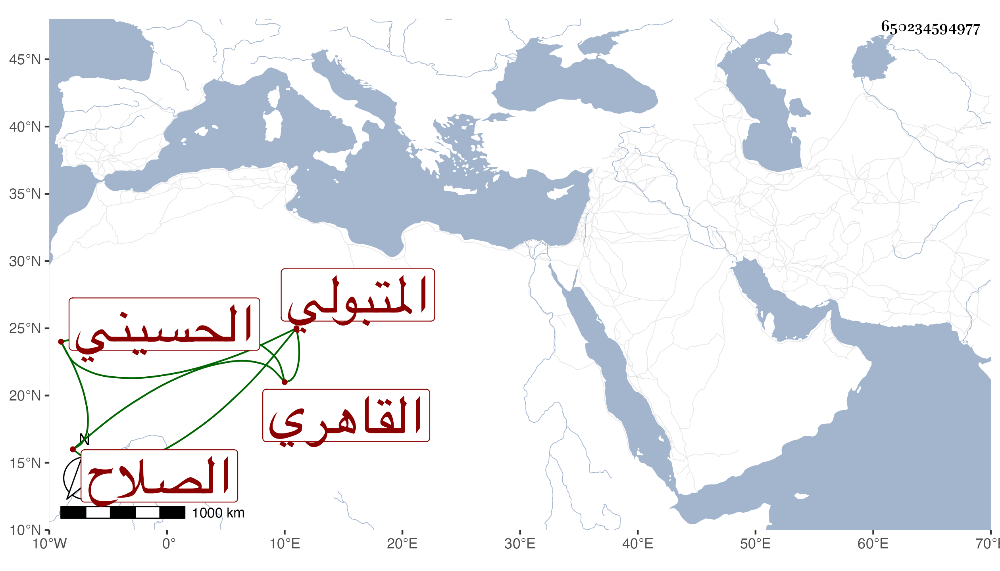

0902Sakhawi.DawLamic.ITO20230111-ara1.EIS1600.650234594977
Biography ID: 650234594977
796
عبد القادر بن موسى بن أحمد بن عبد الرحمن الصلاح المتبولي ثم القاهري الحسيني أخو الشهاب أحمد الماضي ممن يتكسب بإدارة الطاحون وبالتجارة في البز ولا بأس به ميلا في الصالحين والطلبة وحضورا لمشاهد الخير ، وهو ممن أجاز له البرهان الباعوني والنظام بن مفلح وابن زيد وآخرون .
